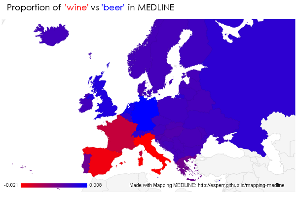

Why Mapping MEDLINE?
The biomedical sciences are a global endeavor, and PubMed contains citations from researchers and clinicians investigating things around the world. Mapping MEDLINE graphs that geographical diversity by taking the results of your PubMed search and displaying them by country.
How it works
Most citations in PubMed are from MEDLINE, and MEDLINE records are indexed with (typically around 10 to 12) Medical Subject Headings. These MeSH headings include not only topic areas but geographic
regions — around 15% of all indexed records are tagged with the name of a continent, country or city. Mapping MEDLINE searches your results against these goegraphical headings. Of course some articles might mention a country name in a title or abstract
without a corresponding index term, so Mapping MEDLINE searches those fields by country name as well.

Proportional Maps
By default, Mapping MEDLINE maps the raw number of results, but it is also possible (by chosing the buttom at the bottom right of your chart) to show a porportional view. This is an way of seeing whether or not there is any significant variation in the prevalence of
results from one country to another. Mapping that focuses on raw counts alone will tend to bury any regional variations for a search underneath the fact that
there are just a lot more researchers publishing things in and about some places than there are for others.

Comparing proportions
Once you have done more than one search, you can compare the proportions for each in a given region. 
Contact
Mapping MEDLINE is a experimental project of Ed Sperr, M.L.I.S.
Ed can be reached at ed_sperr@hotmail.com or esperr@uga.edu.
Caveats
The scale for each choropleth is variable, so small differences for one search may be represented the same way a larger difference for a different search would on another. Because the search for countries is in part a text-word search, false drops are a possibility.
Technologies
MeSH Subheading Graph is lashed together with bailing wire and and jQuery. It utuilizes NCBI's Entrez Programming Utilities for searching PubMed and Google Charts for visualizing the graphs. Responsive layout made easier with Bootstrap.
You can find the source code for this application at GitHub.
License
Please note that the information provided here comes ultimately from the National Center for Biotechnology Information and is subject to the terms listed under their Disclaimer and Copyright notice.
Feel free to us this tool as you wish, but if you use Mapping MEDLINE for publication, I'd appreciate a citation:
Sperr E. MeSH Subheading Graph [Internet]. 2016 [cited your_date_here]. Available from http://esperr.github.io/mesh-subhead-graph/
See also...
Want to have even more fun with MEDLINE visualizations? Check out MeSH Category Graph and PubVenn.